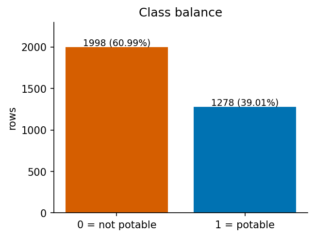
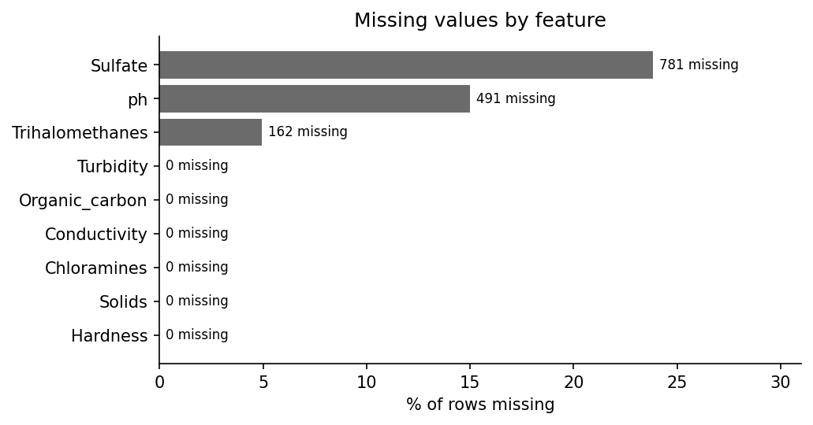
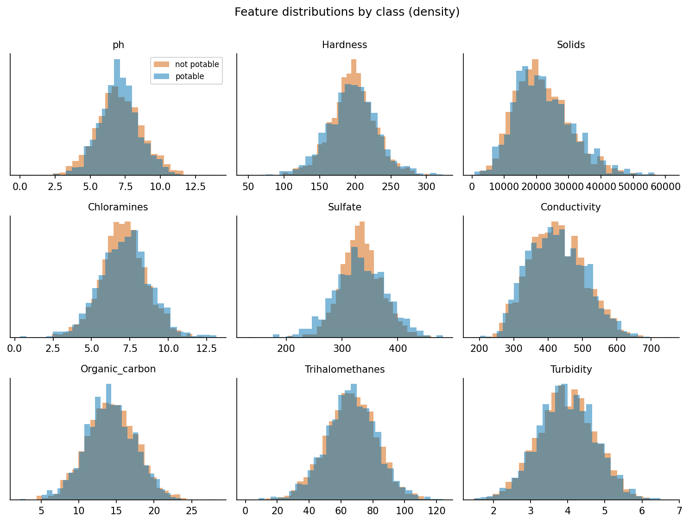

1. Select the scenario’s columns
Each model sees only the features of its scenario (A: 3, B: 6, C: 9). Why: the question is how performance changes as fewer measurements are available.
How well can machine-learning models predict the recorded potability label from measured water parameters, and how does that change as fewer measurements are available?
Experimental research. Everything here describes one public dataset. A model output is an experimental screening result and does not certify that water is safe to drink.
python -m http.server inside the docs folder, then visit http://localhost:8000) or check the published link. If results.json does not exist yet, run the notebook first.
Research question. Using the measured physicochemical parameters in the Water Potability dataset, how well can machine-learning models predict the recorded potability label, and how does performance change across three hypothetical feature-availability scenarios, compared with a majority-class baseline?
One row is one water sample: nine measured physicochemical values (pH, hardness, solids, chloramines, sulfate, conductivity, organic carbon, trihalomethanes, turbidity) and one recorded label, Potability (1 = potable, 0 = not potable). The task is to predict that label from the measurements.
At prediction time a model knows only the measurements of its scenario (3, 6 or 9 values); the label is what it predicts. Limit of the claim: we predict the recorded label in this one dataset, not whether water is actually safe.
About … of the samples are labelled non-potable, so always answering non-potable is right most of the time without looking at any measurement. That is the baseline.
A false “potable” (a non-potable sample predicted potable) is the costlier mistake. We therefore report non-potable recall and the share of “potable” calls that are actually non-potable.
Recall alone misleads: the baseline scores … non-potable recall by flagging everything, yet it never clears a single potable sample. So recall is always read next to precision, balanced accuracy and average precision, and next to the baseline.
The main study compares logistic regression, a decision tree and a random forest with the baseline across scenarios A, B and C. The explorers below let you inspect each model, scenario and decision threshold.
We do not claim a sample predicted “potable” is safe to drink. See Limitations.
Source: Kaggle “Water Potability” (Kadiwal, see footer), one CSV. Size: … rows, … features plus the label. Licence: CC0, public domain (as listed on the Kaggle page). The CSV is included in the repository at data/water_potability.csv; steps to re-download it are in Reproducibility.



Each model sees only the features of its scenario (A: 3, B: 6, C: 9). Why: the question is how performance changes as fewer measurements are available.
Missing pH, Sulfate and Trihalomethanes are replaced by the training median. Why: the median is not pulled by extreme values and keeps every row (dropping rows would lose up to a quarter of the data).
An extra 0/1 column says “this value was missing”. Why: imputation hides missingness, which could itself carry signal. It is kept only where cross-validation shows a gain larger than its standard error.
Standardise to mean 0, spread 1. Why: logistic regression is sensitive to feature scale; trees are not, so they get raw values.
No leakage: imputation and scaling are fitted inside each training fold through a scikit-learn Pipeline, and the test set is transformed with training statistics only. Missing counts and class balance were computed on the whole file for description only; no choice depended on them.
Always predicts non-potable. Defines “no skill”.
Loading…
Idea: a weighted sum of the scaled measurements becomes a probability. Assumes straight-line effects. Fast, hard to overfit.
Idea: a chain of if/then questions on the measurements. Assumes simple thresholds. Readable but unstable.
Idea: many trees on random resamples, votes averaged. Assumes the same as trees but steadier. Strongest, but prone to overfit.
Choosing the final model per scenario: highest mean cross-validation average precision; a simpler model is preferred if it is within one standard error of the best. All three families run in all three scenarios.
Stratified split (class shares preserved), random seed …. The test set scores the final models. Settings, class weights and thresholds are chosen with …-fold stratified cross-validation on the training part only, with identical folds for every scenario and model.
| Metric | What it answers | Why we use it |
|---|---|---|
| Average precision (non-potable = positive) | How well the probability ranks non-potable above potable samples, across all thresholds | Threshold-free; the baseline equals the non-potable share (about …). Used to select models. |
| Balanced accuracy | Average of recall on each class | Always-“non-potable” scores exactly 0.50, so it exposes no-skill models that plain accuracy rewards. |
| Non-potable recall | Of truly non-potable samples, the share flagged | Missing one is the costly error. Alone it misleads: the baseline scores …. |
| Wrong “potable” share | Of “potable” calls, the share that are actually non-potable | Shows how far a “potable” call can be trusted. Not defined for the baseline, which never says potable. |
| Accuracy | Share of correct calls | Secondary only; it flatters the baseline. |
Uncertainty: … paired bootstrap resamples of the test rows give 95% intervals; differences are computed on identical resamples. An interval that includes 0 means the data cannot tell the two apart.
Every setting was chosen by 5-fold cross-validation on the training part only; the test set was not used. Settings with the best cross-validation score were preferred, then the smallest gap between training and validation scores. Class weights and missing-value flags were kept only where cross-validation showed a clear gain, and thresholds were fixed on training predictions and applied once to the test set.
Pick a topic and a scenario.
Loading…
Choose a scenario and a model. Scenarios are experimental feature subsets, not validated testing procedures. Default threshold 0.5.
Loading results…
A model outputs a probability; the threshold decides which samples are called non-potable. Drag to see the trade-off for the selected scenario’s final model (training out-of-fold predictions, so the test set is not touched).
Each dot is one test sample (final model, threshold 0.5). The costly error is a false “potable”: a non-potable sample called potable.
Loading…
Loading…
View code on GitHub Notebook, exact splits, preprocessing, full results and the README with setup steps.
Everything on this page is read from results.json, written by notebooks/water_potability.ipynb. No number is typed in by hand.
data/water_potability.csv (CC0). If it is missing, download water_potability.csv from Kaggle into data/.pip install -r requirements.txt.jupyter nbconvert --to notebook --execute --inplace notebooks/water_potability.ipynb.python -m http.server inside docs/.